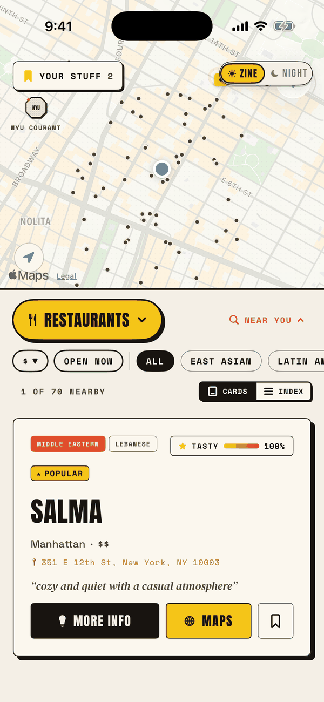
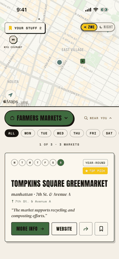
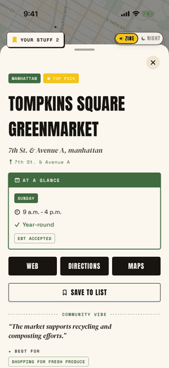

From the Editor
I got tired of asking my friends where to eat.
So I spent a year building the list myself. Every restaurant read about, cross-checked, and written up by hand, then the happy hours, then the markets, then the events, until it turned into an app.
It is 1,000+ vetted restaurants, 100+ Manhattan happy hours with live hour-by-hour timing, 220 farmers markets, and a year-round calendar of food events across all five boroughs.
No accounts. No ads. No tracking. The data ships inside the app, so it works on the subway. It is free, and it will stay free.

- 1,000+Restaurants
- 100+Happy Hours
- 220Farmers Markets
- 151Accept EBT
- 0Trackers
01 Happy Hours
The feed knows what time it is.
Most happy hour lists are a PDF someone forgot to update in 2019. This one sorts itself by the clock: LIVE NOW rises to the top, then STARTS SOON, then LATER TODAY. Every spot carries a countdown, and the ones already pouring get a progress bar.
Scout any day of the week with the Deals by Day switcher, pan the map to filter to your block, then open a venue for its full food and drinks list with prices.
Live countdowns Deals by day Food + drink prices Manhattan
Ends in 1h 13m
in 24m
5:00 PM
Sample of the in-app feed · countdown is live
02 Restaurants
Every spot was read about before it was listed.
Each restaurant gets an Editor’s Note that captures the room, a Tasty Index that ranks quality against popularity, and a menu of must-try dishes, each dish paired with a count of how many sources recommended it.
Pan the map to filter to what is around you, or flip from CARDS to INDEX for a ranked ledger of everything in view. Nineteen cuisine categories, 100+ specific cuisines, price from $ to $$$$, and a one-tap Open Now filter judged in New York time wherever you are.
- 01 Bonnie’s 96
- 02 Ha’s Snack Bar 94
- 03 Superiority Burger 93
- 04 Tatiana 92
- 05 Sofreh 90
- 06 Taqueria Ramirez 89
Illustrative ledger · the app ships 1,000+
03 Farmers Markets
220 markets, and the schedule that matters.
GrowNYC, Down to Earth, and the independents, mapped with the day-of-week filter that decides whether a trip is worth it. 151 of them work with SNAP/EBT, and every listing says so along with its hours and season.
EBT · 151 Filter by day Hours + season All five boroughs


04 Food Events
A year of festivals, pop-ups and chef collabs.
Grouped by month so you can scan ahead, with links out to the source page for tickets or RSVP. The calendar in the app refreshes on its own, and still works offline.
- AUG Hester Street Fair LES
- SEP Feast of San Gennaro Little Italy
- OCT Queens Night Market Corona
- NOV Chef Collab Series Brooklyn
05 Privacy
The app has no idea who you are. On purpose.
There is no account to make and nothing to log in to. Every restaurant, happy hour, market and event is bundled inside the app, so it works with no signal at all. The only network calls fetch fresh event and trending listings, and they send nothing about you. Location, if you grant it, is used only on your iPhone to center the map.
About · Contact
Made by one person, in Brooklyn.
NYC Eats is a non-commercial project by Pradyuman Gangan. There is no team, no investors, and no plan to sell your data because there is no data to sell. If a place closed, moved, or is missing, tell me and I will fix it in the next update.
gangan.pradyuman@gmail.com